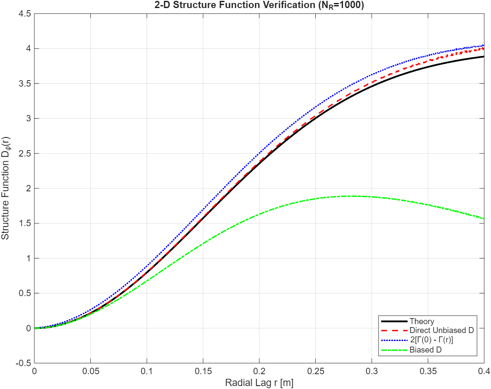

Unbiased Structure Function of 2-D Random Processes
The structure function, \(D_u(\Delta\mathbf{r})\), is an important statistic in optical turbulence because the mean of the process may be non-stationary while the increments remain stationary. Various phenomena in optical turbulence are computed as differential variances, often arising from anisoplanatic geometries. These occur in situations where the field of view is larger than the isoplanatic angle (\theta_0) or when using artificial beacons for adaptive optics.
Structure functions are especially useful for verifying wave-optics simulations and experimental turbulent wavefront data. There are two main reasons for this: 1) the theoretical "wave structure function" maintains the same form in both weak and strong turbulence, and 2) it is more numerically stable for computing statistics when the variance is very large, such as in Kolmogorov turbulence. This is why Listing 9.4 in my book utilizes the structure function for verification.
As mentioned in Some Statistical Definitions, the structure function has a close relationship with correlation. Consequently, calculating either from experimental or simulated data requires an unbiased estimator, similar to the approach in Unbiased Correlation of 2-D Random Processes. This article describes how to remove the bias imposed by the geometry of the observation window. The process is very similar to that for correlation, and while the topic is introduced in the book, I provide a more detailed treatment here.
Relationship to Covariance
As a reminder, for a stationary random process, the structure function is related to the covariance \(\Gamma_u(\Delta\mathbf{r})\) by the identity: $$ \begin{equation} D_u(\Delta\mathbf{r}) = 2 \left[ \Gamma_u(\mathbf{0}) - \Gamma_u(\Delta\mathbf{r}) \right] \end{equation} $$ As the spatial lag \(\Delta\mathbf{r}\) increases, \(\Gamma_u(\Delta\mathbf{r})\) typically decays to zero, meaning the structure function should converge to \(2\sigma^2\) (twice the variance). However, without proper unbiasing, the windowing effect causes the estimate to deviate dramatically from this theoretical limit at large separations.
The Unbiasing Procedure
In str_fcn2_ft.m, we implement an efficient Fourier-based calculation that accounts for the mask. By dividing the raw structure function numerator by the mask's autocorrelation (the area of overlap), we ensure that the statistical estimate remains accurate even at the edges of the aperture where fewer pixel pairs are available for averaging. Refer to my Matlab GitHub for a newer version of str_fcn2_ft.m than the one in Listing 3.7 of my book.
Numerical Verification
The script checkStrFcn2.m compares the direct structure function calculation against the theoretical Gaussian model and a derived version using the unbiased covariance.
As seen in Figure 1, the Biased D curve (green) fails to capture the true statistics of the process as the lag increases. Because the denominator is missing, the energy is attenuated by the decreasing area of overlap. This leads to a dramatic underestimation of the phase variance over large apertures. By contrast, the Direct Unbiased D (red) and the version derived from the Unbiased Correlation (blue) match the theory perfectly, proving that the unbiasing logic is consistent across both second-order statistical measures.
Properly unbiasing the structure function is a critical step in verifying simulation tools, such as atmospheric phase screen generators (both numerical and experimental), to ensure that the simulated turbulence exhibits the correct spatial correlation and total power.